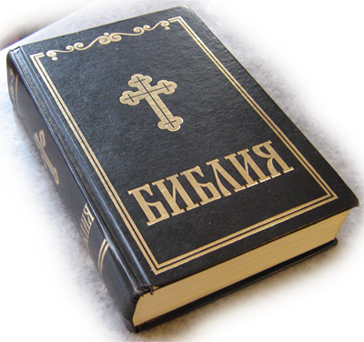

Православна Библия, издание 1991 г.
Текстът на Библията, издание на Светия синод на Българската Православна Църква, представен в програмата "Компютърна Библия" е взет от Интернет. Файлове с този текст може да се изтеглят от сайтове, като: bibliata.com, bezmonitor.com, а вероятно и други.
В изтегления от Интернет текст след сравняване с напечатаното издание на Библията от 1991 г. е направена известна редакция:
- отбелязани са думите с курсив (наклонен шрифт);
- добавени са посочените бележки под линия и препратки;
- поправени са някои грешки, допуснати вероятно при сканирането или набирането на текста.
Така представеният в "Компютърна Библия" текст на Православната Библия е най-точният електронен вариант на одобрения от Светия синод на Българската православна църква съвременен български превод на Библията.